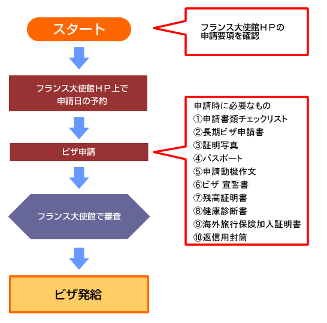

';
$header_obj->fncMenuHead_h1text = 'ワーキングホリデー協定国（フランス） | ワーホリビザ情報';
$header_obj->display_header();
include('../calendar_module/mod_event_horizontal.php');
?>
';
$header_obj->fncMenuHead_h1text = 'ワーキングホリデー協定国（フランス） | ワーホリビザ情報';
$header_obj->display_header();
include('../calendar_module/mod_event_horizontal.php');
?>

フランス国情報へ フランスのワーキングホリデービザの取得方法についてご案内します。
ビザ取得までのステップチャート
2014年度 ワーキングホリデービザ (2014年1月1日から同年12月31日の間に入国予定の方)
ワーキングホリデー・ビザとは、フランスと日本の若者たちが、自由な時間を利用して、お互いの国の文化や生活習慣に触れる良い機会を与えるため、また滞在費用を補うために就労を許可するものです。

フランス大使館 領事部 ワーキング・ホリデービザ係
〒106-8514 東京都港区南麻布4-11-44
外務省ＨＰで基本情報を確認しよう
ビザの申請、ひとりでできますか？

ビザについて
ビザを取得するための条件
- 申請時に満18歳以上30歳以下であること
- フランスを知るための渡航で、なおかつ仕事に就く意思があること
- フランスへワーキングホリデービザを過去に取得していないこと
- 子ども同伴ではないこと
ワーキング・ホリデービザの特徴
- ワーキングホリデービザの有効期限 - フランスに入国した日から1年。入国する日付はビザ申請時に決まっていること
- ワーキングホリデービザ所持者は、滞在中にその滞在期間の延長や身分の変更は受けられません
- ビザの発給は1回限りですので、十分にご注意ください。 フランス滞在中もしくは出発前にパスポートを紛失、盗難しても再発給されません
- 仕事が見つかった方は、速やかに所在県の労働管理局（Direction régionale des Entreprises, de la Concurrence, de la Consommation, du Travail et de l’Emploi/ DIRECCTE）で、一時労働許可証（Autorisation Provisoire de Travail）を取得してください。この許可証は職種を問わず、契約書の期間に応じて、即時発行されます
- このビザはフランス本土の各県においてのみ有効（海外県・海外領土は除く）
フランスのワーキングホリデービザ申請にあたり
「海外旅行保険加入証明書」が必要です。必ず保険に加入してください。
なお、クレジットカードに付帯される保険は対象外です。ご注意ください。
// The MAX_PATH below should point to the base of your OpenX installation define('MAX_PATH', '/var/www/html/ad'); if (@include_once(MAX_PATH . '/www/delivery/alocal.php')) { if (!isset($phpAds_context)) { $phpAds_context = array(); } // function view_local($what, $zoneid=0, $campaignid=0, $bannerid=0, $target='', $source='', $withtext='', $context='', $charset='') $phpAds_raw = view_local('', 129, 0, 0, '', '', '0', $phpAds_context, ''); } echo $phpAds_raw['html']; ?>
AIU保険会社のサイトへジャンプします
「海外旅行保険加入証明書」が必要です。必ず保険に加入してください。
なお、クレジットカードに付帯される保険は対象外です。ご注意ください。
// The MAX_PATH below should point to the base of your OpenX installation define('MAX_PATH', '/var/www/html/ad'); if (@include_once(MAX_PATH . '/www/delivery/alocal.php')) { if (!isset($phpAds_context)) { $phpAds_context = array(); } // function view_local($what, $zoneid=0, $campaignid=0, $bannerid=0, $target='', $source='', $withtext='', $context='', $charset='') $phpAds_raw = view_local('', 129, 0, 0, '', '', '0', $phpAds_context, ''); } echo $phpAds_raw['html']; ?>
AIU保険会社のサイトへジャンプします
ビザの申請、ひとりでできますか？

ビザ申請方法
申請方法
- 本人申請のみ。受付時間は月曜日から金曜日の午前9時から11時半まで（日本の祝祭日を除く）。
- 郵送による申請はできません。
- 申請者はフランス大使館ホームページから必ず予約を入れてください。
重要事項
- コピーサイズはA4に限ります。
- ファクスや電子メールによる書類提出はできません。
- 申請審査期間は現在1カ月程度かかります。
- 追加書類を要請する場合があります。
- すべての必要書類がそろっていてもビザが発給されない場合があります。
- 申請はフランス入国日の3カ月前からできます。遅くとも渡航4週間前までに申請してください。
- 申請書は英語またはフランス語で記入して下さい。日本語では記入しないで下さい。
ビザの受領
- 月曜日から金曜日の午前9時から11時30分の間においてビザの受取が可能です。申請時にお渡しした申請証明書を必ず持参してください
- 申請時に氏名・住所を明記し、600円分の切手を貼った封筒を提出された場合（パスポート1件につき封筒1通）、ビザを貼付したパスポートを書留で返送可能です。再度来館いただく必要がないよう、当館ではこの方法を推奨します。書留以外の送付方法（速達、配達証明など）につきましては、郵便局でご確認の上封筒を準備してください
申請に必要な書類
-
注意 申請書類の準備には細心の注意を払ってください。
- 申請書上のフランス滞在中の住所欄（申請書24項または25項）を必ず記入すること。滞在中の最終的な住所ではなくても、フランス到着時の住所を記載してください
- 《健康である》ことが明確な健康診断証明書を提示すること
下記の事項に不備・不足がある場合は、審査手続きに1～2カ月の遅れが生じ、申請却下となる場合もあります。
申請者への重要なお知らせ
申請動機作文は必ずしもフランス語に訳す必要はありません。
ただしフランス語の修得は、フランスになじむためはもちろん、コミュニケーションや仕事探しの上でも大いに役立ちます。
出発前に語学力の向上をめざす方は、教育機関の利用もご検討ください。
【注意】
ここに記載のある情報は法改正等により予告なく変更することもあります。
また、このページの内容は各国大使館・領事館等より情報を収集し細心の注意を払って作成しておりますが、
正確なものであることを保証するものではありません。
ビザ取得の際は、必ず各国大使館・領事館等の情報をご自身でもご確認ください。
ビザの申請、ひとりでできますか？

display_links(); ?>